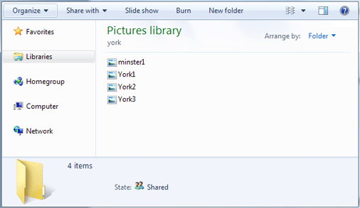
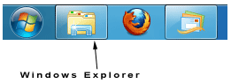
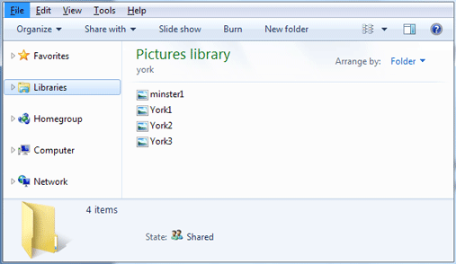
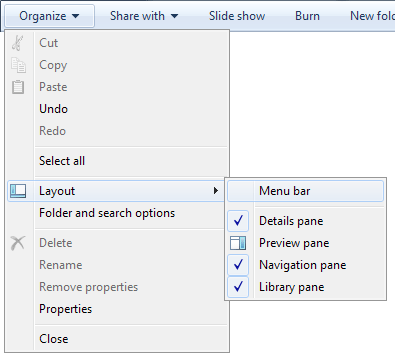
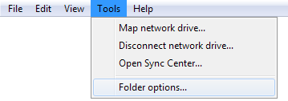
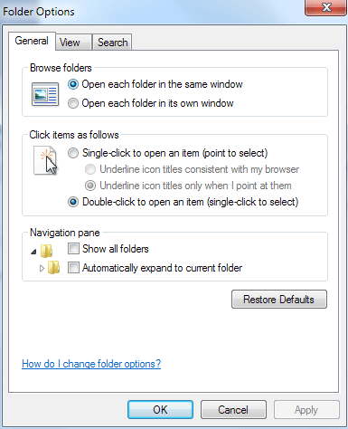
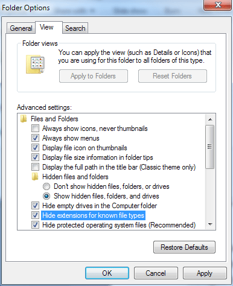
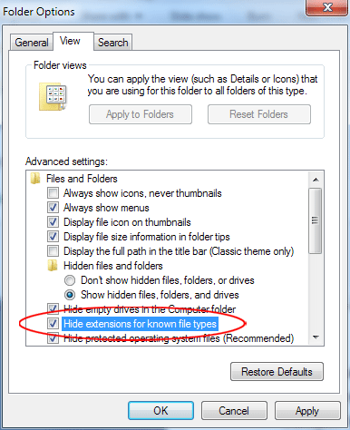
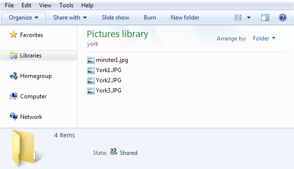

Free
computer Tutorials
|
Free
computer Tutorials
|
|
 back back |
Stay at Home and Learn | ||||
File ExtensionsIn the next section, we discuss how to work with images. Before we get to that, it's a good idea to check to make sure you have files extensions switched on.
A file extension is the dot and letters at the end of a file name. For example, a picture you take on your camera phone will probably end in .JPG or .JPEG. The letters stand for Joint Photographic Experts Group, and tell Windows and other programmes that it is an image file. Other file extensions for images are GIF, PNG, and TIFF. If you have file extensions switched off you won't be able to tell what sort of image you have. Not only that, somebody could send you an attachment to an email that looks like this: picture_file.jpg If you just saw the JPG ending, you might open the file, thinking it was an image. However, the real file ending could be this: picture_file.jpg.exe But you won't see the .exe at the end if you have file extensions switched off. The exe means it's an executable programme that will be installed onto your computer. If you opened the file, the programme would install automatically. And it certainly won't have your best interests at heart! In the image below, we have four files showing, but no file extensions,
so we could be vunerable to this sort of attack:  To switch on file extensions, start Windows Explorer by clicking its icon just to the right of the start button:  The default for Windows Explorer is to hide the menu bars. To view them, press the left ALT key on your keyboard (the one to the left of the space bar). You should see this at the top of Windows Explorer:  If you still can't see the menu bars click Organize > Layout > Menu Bar:  Now that you have a menu bar, click the Tools item. From the Tools menu, select Folder Options:  You should see the following dialogue box appear:  Click on the View tab at the top to see the following:  Have a look at the list of options and locate "Hide extensions for known file types":  As, you can see there is a check mark in the box next to this entry. If yours is the same, click the box to remove the check mark. Then click the Apply button at the bottom. Click OK to get rid of the dialogue box. You should now be able to see the extensions on the end of file names:  Our four images are now showing the JPG file extension.
Now that you can see file extensions, we'll make a start
on working with images in Windows 7.
Copy an Image to a New Folder --> |
|||||
|